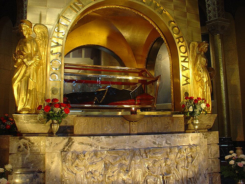

Santas das causas impossíveis
Santa Rita de Cássia ou Santa dos Impossíveis, como é geralmente conhecida a grande advogada dos aflitos, nasceu em Rocca Porena, perto de Cássia (Itália), em 22 de Maio de 1381, tendo por pais Antônio Mancini e Amada Ferri. O nascimento da Santa foi precedido por sinais maravilhosos e visões celestiais que fizeram seus pais perceberem algo da futura e providencial missão de Rita, que seria colocada no mundo para instrumento da misericórdia de Deus em favor da humanidade sofredora.
Desde jovem, Rita tinha intenção de ser religiosa, mas seus pais, temendo que ela ficasse sozinha, resolveram casá-la com um jovem de família nobre, mas de temperamento excessivamente violento. Ela suportou pacientemente tal situação por 18 anos. Como ele tinha muitos inimigos, foi assassinado. A viúva suportou a dolorosa perda, perdoando os assassinos. Porém, crescia em seus filhos o desejo de vingança. Rita pediu que Deus os levasse, pois seria melhor que outra tragédia. Assim, perdeu os filhos. Rita estava livre para dedicar-se a Deus e pediu para entrar no Convento das religiosas Agostinianas da cidade. Mas naquela comunidade só podiam entrar virgens. Então, ela transformou sua casa num claustro, onde rezava as orações habituais das religiosas.
Uma noite, enquanto rezava, ouviu três batidas violentas em sua porta e uma voz lá de fora dizia: “Rita! Rita!”. Abriu a porta e viu em sua frente três Santos, que rapidamente a levaram ao Convento onde havia sido negada três vezes. Os mensageiros fizeram-na entrar, apesar das portas estarem fechadas, e deixaram Rita de Cássia em um dos claustros. Depois desapareceram.A superiora ficou fascinada com essa manifestação Divina. As religiosas decidiram por unanimidade que a viúva fosse recebida. Admitida noviça Rita começou a trabalhar para realizar seus desejos. Consagrou-se à oração e penitência, seu corpo foi seguidamente flagelado. Passava os dias a pão e água e noites sob vigília e oração.
Certo dia pediu com extraordinário fervor que um estigma de Jesus aparecesse para sentir a dor da redenção. Em uma visão, Rita recebeu um espinho cravado em sua testa. A chaga ficou por toda a vida e ainda pode-se vê-la em sua cabeça conservada intacta com o resto do corpo.
Um dia uma parente foi visitá-la, ela agradeceu a visita e ao se despedir pediu que lhe trouxesse algumas rosas do jardim. Como era inverno e não tinha rosas, pensaram que Rita estava delirando e sua visitante não ligou para seu pedido. Como para voltar para casa teria que passar pelo jardim olhou e se surpreendeu ao contemplar quatro lindas rosas que se abriram entre os ramos secos. Admirada do prodígio, entrou no jardim, colheu as flores e as levou ao Convento de Cássia. Nesta época, Rita estava muito doente e morreu em 22 de Maio de 1457.
No dia seguinte, seu corpo foi colocado na Igreja do Convento. Todos os habitantes da cidade foram venerar a religiosa.
Santificação e corpo intacto
No século XVII foi beatificada e em 24 de Maio de 1990, canonizada. O corpo de Santa Rita de Cássia continua conservado intacto até hoje. Qualquer pessoa pode contemplá-la na Igreja do Convento de Cássia, dentro de um relicário de cristal. Depois de tantos anos, seus membros ainda têm flexibilidade e pela expressão do rosto, parece estar dormindo.
"Este sinal do espinho, chaga, foi mais do que um sofrimento, foi a prova de sua participação na paixão de Cristo. Que Rita de Cássia possa ser exemplo de menina, jovem, mulher, esposa, mãe, viúva, religiosa..." (São João Paulo II)